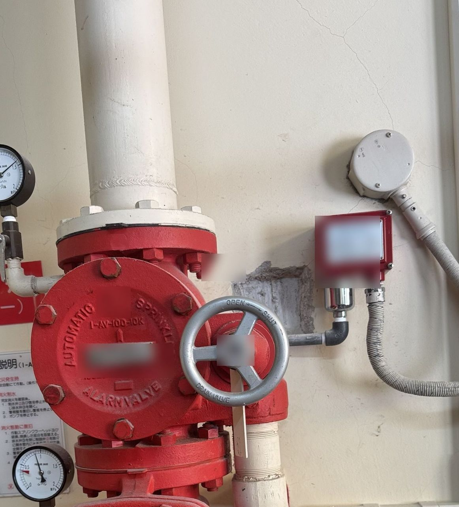
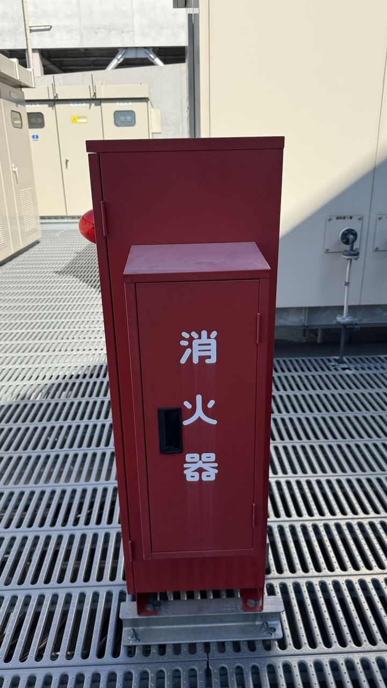
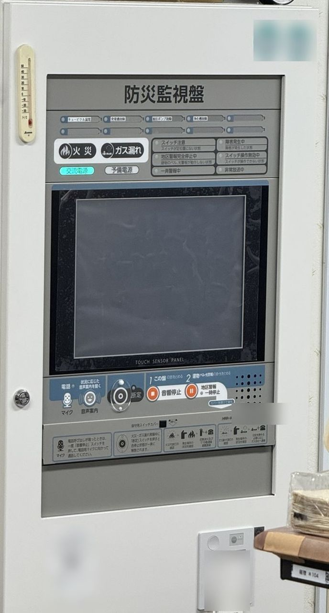
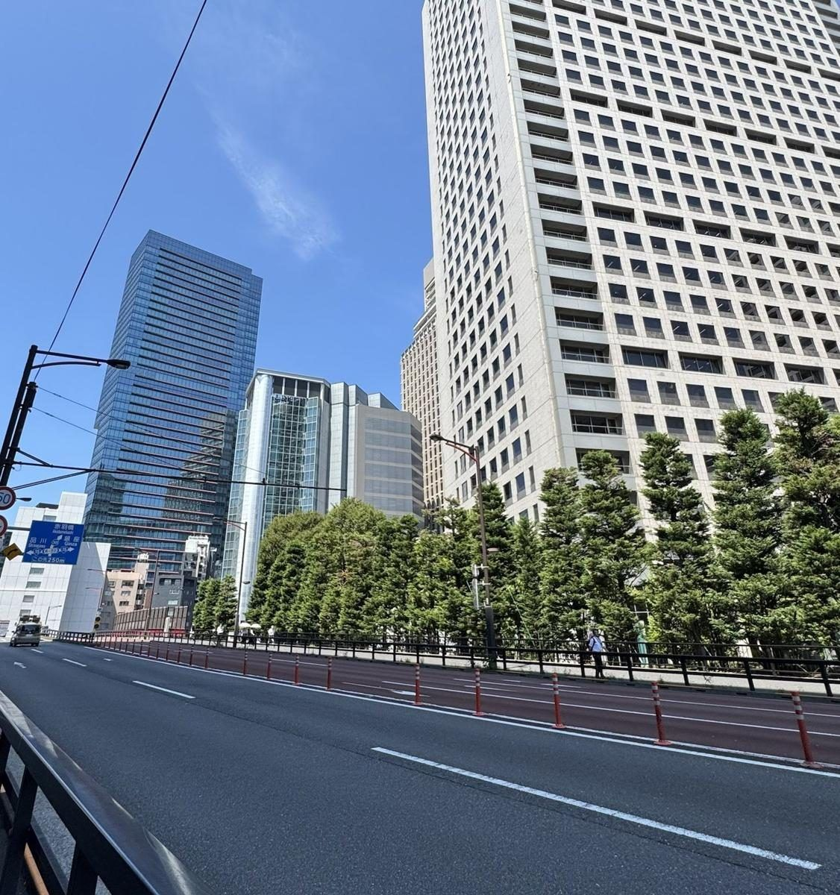
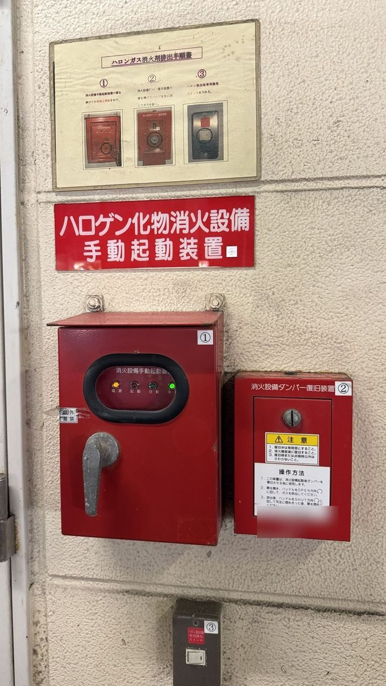
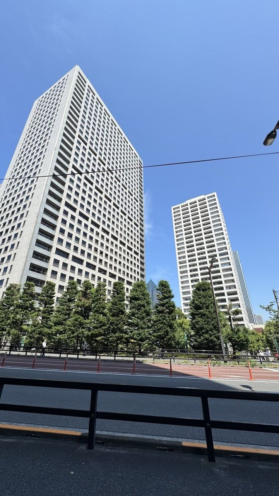
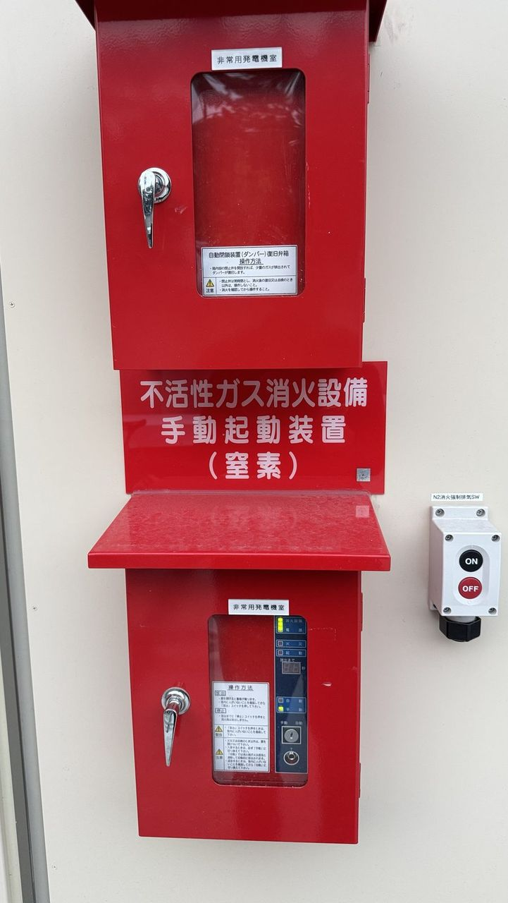

Services
防災事業 メンテナンス事業
消防設備士（全類）が、東京23区の消防設備点検から点検票の作成、不良箇所の改修まで一括でお引き受けします
Fire Safety Services 防災事業
対応エリアは東京23区内が中心です（23区外は交通費・出張費を加算して対応）。
点検は原則2名体制で伺います。
料金の目安はこちらをご覧ください。
消防設備点検（機器点検・総合点検）

マンション・事務所・店舗などの消防用設備等を、法令に基づいて点検します。
スプリンクラー設備や、避難はしご・救助袋などの避難器具の点検にも対応します。
点検票の作成は料金に含まれます。
主な対応・作業内容
- 機器点検（6か月に1回）・総合点検（1年に1回）
- スプリンクラー設備、避難器具（避難はしご・救助袋など）の点検
- 誘導灯の点検
- 点検票（点検結果総括表・点検者一覧表を含む）の作成
- 消防署への報告期限のお知らせ
ご提供価値
- 年2回の定期点検の窓口を1社にまとめられます
- 報告書の提出方法は「提出のご案内」でご説明します
消火器の点検・交換

消火器1本から伺います。
製造年・使用期限を1本ずつ確認し、期限切れや不良の消火器は交換・回収までご提案します。
主な対応・作業内容
- 外観・設置状況・製造年・使用期限の確認
- 期限切れ・不良の消火器の交換
- 古い消火器の回収
ご提供価値
- 1本から対応します
- 写真付きで結果をご報告します
自動火災報知設備の点検

受信機・感知器・発信機・音響装置を点検します。
住戸内の感知器点検は、管理会社様と事前に日程を調整して実施します。
主な対応・作業内容
- 受信機・感知器・発信機・音響装置の作動確認
- 住戸内の感知器点検（事前告知・日程調整）
ご提供価値
- 入居者様への告知から日程調整まで、管理会社様と連携して進めます
- 不良箇所は写真で記録し、改修までご提案します
不良箇所の改修・整備

点検や消防署の立入検査で指摘された不備を、甲種消防設備士が改修します。
写真と根拠を添えてお見積りします。
主な対応・作業内容
- 指摘事項の是正
- 感知器の交換
- 誘導灯のバッテリー交換
ご提供価値
- 点検から改修まで同じ会社で完結します
- 写真と根拠付きのお見積りで、改修の必要性が分かります
テナント工事に伴う消防対応

内装工事に合わせた感知器の移設・増設と、甲種消防設備士による着工届の提出をまとめてお引き受けします。
着工届は、工事に着手する日の10日前までの提出が必要です。
手続きを円滑に進めるため、3週間前までのご相談をお願いしています。
主な対応・作業内容
- 感知器の移設・増設
- 甲種消防設備士による着工届の提出
ご提供価値
- 内装会社様の工程に合わせて対応します
- 消防対応の窓口を1社にまとめられます
点検会社様への応援

繁忙期の応援や、有資格者が不足している現場に1日単位で伺います。
応援の場合は、先方の体制に入る形で1名から対応します。
土曜日も対応可能です。
主な対応・作業内容
- 水系設備（消火栓・スプリンクラー等）の点検補助
- 自動火災報知設備の感知器作動試験・復旧確認
- 消火器の点検・交換作業
ご提供価値
- 消防設備士（全類）が対応します
- 1日単位・土曜日でも伺えます
改装・入居前の消防設備チェック

テナントの入居や内装変更の前に現地を確認し、必要になる消防設備（感知器の増設、誘導灯、消火器など）を一覧にしてお渡しします。
概算費用もあわせてお出しするので、工事の予算と段取りを早めに決められます。
主な対応・作業内容
- 入居・改装予定区画の現地確認
- 必要な消防設備の洗い出しと一覧化
- 概算費用のお見積り
ご提供価値
- 工事が始まってからの「追加の消防工事」を防げます
- 消防設備士（全類）が、設備の種類を問わず判断します
住宅用火災警報器の一括交換

賃貸アパートなど管理物件の住宅用火災警報器を、各住戸まとめて交換します。
交換した住戸と日付を記録してお渡しするので、物件ごとの管理がしやすくなります。
主な対応・作業内容
- 各住戸の住宅用火災警報器の交換
- 入居者様への事前告知と日程調整
- 交換記録（住戸・日付）の作成
ご提供価値
- 交換の目安とされる10年を迎えた物件をまとめて更新できます
- 管理物件ごとの交換状況を記録で把握できます
スプリンクラー設備の点検・整備

スプリンクラーヘッド、配管、流水検知装置（アラーム弁）、消火ポンプなどの点検・整備に対応します。
ヘッドの破損や漏水といった不良への対応のほか、テナントの入替・改装に伴うヘッドの増設・移設のご相談も承ります。
主な対応・作業内容
- スプリンクラーヘッド・配管の点検
- 流水検知装置（アラーム弁）・消火ポンプの点検
- ヘッドの破損・漏水などの不良対応
- 改装に伴うヘッドの増設・移設の相談
ご提供価値
- 機器点検・総合点検とあわせて一括で対応できます
- 不良箇所は、改修の見積りまでご提案します
避難設備・避難器具の点検・整備

避難はしご、救助袋、緩降機などの避難器具と、誘導灯・非常用照明の点検・整備に対応します。
器具の作動確認に加え、設置場所の表示や、降下の妨げになる障害物がないかもあわせて確認します。
主な対応・作業内容
- 避難はしご・救助袋・緩降機の点検
- 誘導灯・非常用照明の点検とバッテリーの確認
- 設置場所の表示、降下障害物の確認
ご提供価値
- 他の消防設備とあわせて、年2回の点検に組み込めます
- いざという時に使える状態を、点検の記録に残せます
民泊（住宅宿泊事業）の消防設備点検・整備

民泊を始める際に必要となる消防法令適合通知書の取得に向けて、設備の確認から、自動火災報知設備・誘導灯・消火器の設置・点検まで対応します。
運営開始後の定期点検もお任せください。
主な対応・作業内容
- 開業前の設備チェック（消防法令適合通知書の取得に向けて）
- 自動火災報知設備・誘導灯・消火器の設置・点検
- 運営開始後の定期点検
ご提供価値
- 開業までに必要な消防設備と手続きの段取りを、早めに把握できます
- 開業後の点検も継続してお任せいただけます
ガス系消火設備の点検

窒素、ハロゲン化物、二酸化炭素などのガス系消火設備の点検に対応します。
サーバールームや電気室、機械室など、水による消火が適さない場所に設置される設備です。
主な対応・作業内容
- ガス容器・容器弁の確認
- 選択弁・放出ヘッド・配管の点検
- 制御盤・警報装置の作動確認
ご提供価値
- 水消火が使えない場所の設備を、他の消防設備とあわせて点検できます
- 機器点検・総合点検の定期点検に組み込めます
消防署の立入検査の立会い・是正対応

消防署の立入検査への立会いから、指摘事項の是正・改修、報告まで対応します。
事前に設備の状態を確認しておくことで、当日の指摘を減らす備えもできます。
主な対応・作業内容
- 立入検査当日の立会い
- 指摘事項の確認と、是正方法のご提案
- 是正工事・整備と、完了後の報告
ご提供価値
- 指摘を受けてから慌てないよう、事前確認を含めて段取りできます
- 点検から改修まで、同じ窓口で対応できます
消防訓練・防火管理の実務サポート

消防計画の作成支援や、避難訓練・初期消火訓練の実施サポートを行います。
点検とあわせてご相談いただくことで、建物の防火管理をまとめて支援します。
主な対応・作業内容
- 消防計画の作成・見直しの支援
- 避難訓練・初期消火訓練の実施サポート
- 防火管理の実務に関するご相談
ご提供価値
- 点検だけでは終わらない、建物の防火管理全体を支援します
- 訓練の実施に向けた段取りづくりもお手伝いします
福祉施設向けの消防設備点検・整備

グループホーム、デイサービス、保育所などの福祉施設の消防設備点検・整備に対応します。
用途ごとに異なる設備要件を確認し、必要な設備の点検から改修まで対応します。
主な対応・作業内容
- 用途に応じた設備要件の確認
- 自動火災報知設備・誘導灯・消火器などの点検
- 不良箇所の改修・整備
ご提供価値
- 施設の用途に合わせた点検内容をご提案します
- 開設や用途変更の際の、消防設備のご相談にも対応します
飲食店・厨房向けの消防設備点検

飲食店の厨房に設置される自動消火設備（フード消火設備）や、店舗の消防設備の点検・整備に対応します。
テナント工事に伴う消防対応とあわせたご相談も可能です。
主な対応・作業内容
- 厨房の自動消火設備（フード消火設備）の点検
- 店舗内の消火器・誘導灯・警報設備の点検
- テナント入替時の設備チェック
ご提供価値
- 飲食テナントの多い物件を、まとめて対応できます
- 営業時間に配慮した日程調整もご相談ください
建築基準法の定期報告や用途変更のご相談は、提携する一級建築士をご紹介します。
現地調査への立会いや日程調整も承ります。
Price 料金の目安
| 消火器点検・スポット （10本まで・1回） | 16,500円〜 |
|---|---|
| 消火器点検・年間契約 （10本まで・年2回） | 30,000円〜 （1回あたり15,000円） |
| 消火器点検 （11本目以降） | 1本につき 1,000円 |
| 消防用設備点検・年間契約 （小規模な共同住宅など・年2回） | 30,000円〜 （1回あたり15,000円〜） |
| 中・大規模の建物／自動火災報知設備・スプリンクラー設備 | 現地確認のうえお見積り |
| 不良箇所の改修・消火器の交換 | 別途お見積り |
| お見積り | 無料 |
※ 消火器点検の料金例：15本の場合 16,500円＋1,000円×5本＝21,500円〜（スポット1回）
※ 点検料金には、点検票（点検結果総括表・点検者一覧表を含む）の作成を含みます。
※ 消防署への点検結果報告書の作成・提出は、建物の関係者様にお願いしております。
提出方法は「点検結果報告書の提出のご案内」をご覧ください。
※ 建物の用途・規模・点検内容により金額が決まります。
正式な金額はお見積りにてご案内します。
このような方におすすめです
- 複数の物件を管理しており、消防点検の窓口を1社にまとめたい管理会社様
- テナントごとに点検業者が異なり、日程調整に手間がかかっているビルオーナー様
- 開業・改装にあわせて、消防設備の対応をまとめて任せたい店舗様・内装会社様
- 繁忙期に有資格者の応援が必要な点検会社様
メーカー様・発注元様向けのご案内
For Manufacturers メンテナンス事業
防災事業のほかに、設備メーカー様からの指定に基づき、以下の保守・点検にも対応しています。
一般のお客様・管理会社様からの、これらの設備に関するご依頼・お問い合わせは受け付けておりません。
不具合の際は、各メーカー様の窓口へご連絡ください。
※ 消防設備点検（防災事業）のご依頼は、管理会社様・オーナー様からも承っております。
点検のご相談はお問い合わせからどうぞ。
メーカー様・発注元様は、お問い合わせフォームで「メーカー様からのメンテナンス事業のご依頼」をお選びください。
01 宅配ボックス
設置・設定・修理・保守
02 インターホン
点検・部品交換
03 業務用ランドリー
洗濯機・乾燥機の修理・保守
04 EV充電器
保守点検
05 太陽光発電設備
竣工検査・年次点検
06 コーヒーサーバー
定期メンテナンス・保守
07 電柱
点検・調査
08 ロボット（清掃・配膳・介護）
一次対応・故障診断・メーカーへの取次
Process ご依頼の流れ
STEP 01
お問い合わせ
建物の所在地・用途・規模をお知らせください。
フォーム・LINE・お電話で承ります。
STEP 02
お見積り
設備の内容を確認し、お見積りをご提示します。必要に応じて現地を確認します。
STEP 03
点検の実施
事前に日程を告知し、2名体制で点検します。結果は写真で記録します。
STEP 05
改修のご提案
不良箇所があれば、写真と根拠を添えて改修をご提案します。
消防設備点検のご相談は、
株式会社上田へ。
点検のお見積り、指摘事項の改修、テナント工事に伴う消防対応、点検会社様の応援など、
お気軽にお問い合わせください。
お見積りは無料です。
消防設備点検のお見積り、改修のご相談、点検会社様の応援依頼など、
お気軽にメッセージください。